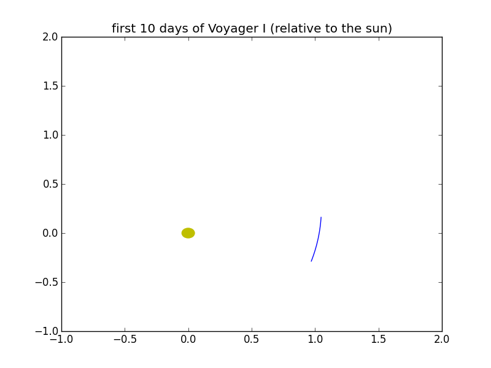

This page provides some examples of using py-NASA-horizon. It can be used as a tutorial or as a cookbook. To find out the ID of the object you want to query, please consult the Major Bodies Overview. In general, the interval size is one day, the measurement unit is AU-D without any corrections, and the sun is the center of the coordinate system.
To query one just one day, set start and end to the same date. This example uses Mercury as the target object and 2013-01-01 as date.
>>> import datetime
>>> from NASAhorizons import NASAhorizons
>>> # query position of Mercury for January 1st 2013
>>> jpl = NASAhorizons()
>>> jpl.set_object_id(199)
>>> qdate = datetime.date(year=1977, month=1, day=1)
>>> print(jpl.get_data(qdate, qdate))
[{'date': '1977-01-01T00:00:00.0000', 'z': 0.01562549439448472, 'x': 0.09117860868439513, 'y': 0.2894764150799116}]
Matplotlib can be used to plot the path of a spacecraft. Here we plot the path of Voyager I for its first 20 days relative to the sun.
>>> import datetime
>>> from NASAhorizons import NASAhorizons
>>> import matplotlib.pyplot as plt
>>> # query first 20 days of Voyager I relative to the sun
>>> jpl = NASAhorizons()
>>> jpl.set_object_id(-31)
>>> start = datetime.date(year=1977, month=9, day=6)
>>> end = datetime.date(year=1977, month=9, day=26)
>>> alldata = jpl.get_data(start, end, format="list")
>>> xdata = []
>>> ydata = []
>>> for pos in alldata:
>>> xdata.append(pos['x'])
>>> ydata.append(pos['y'])
>>> # plot data
>>> plt.title('first 20 days of Voyager I')
>>> plt.plot(xdata, ydata)
>>> plt.axis([-1,2,-1,2])
>>> sun = plt.Circle((0,0), 0.05,color='y')
>>> fig = plt.gcf()
>>> fig.gca().add_artist(sun)
>>> fig.show()
The result lookslike this:
{kind=link}